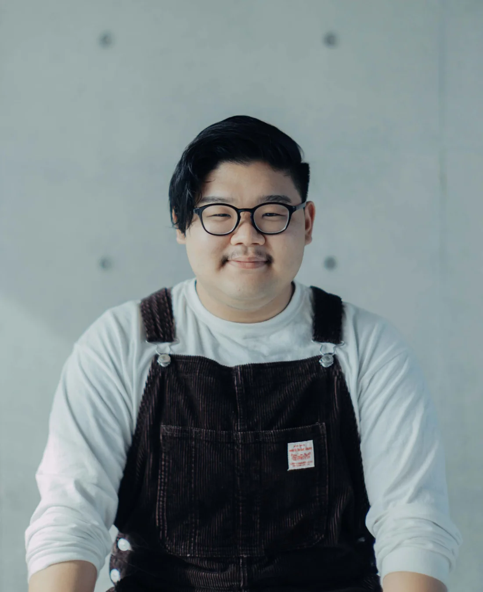
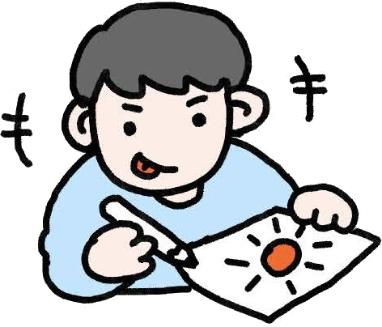
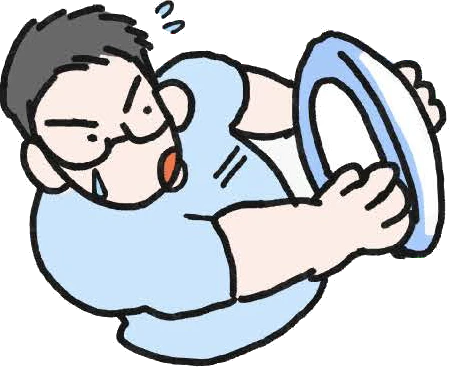
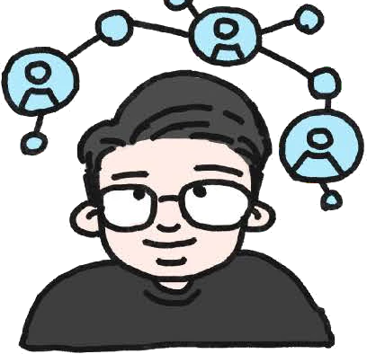
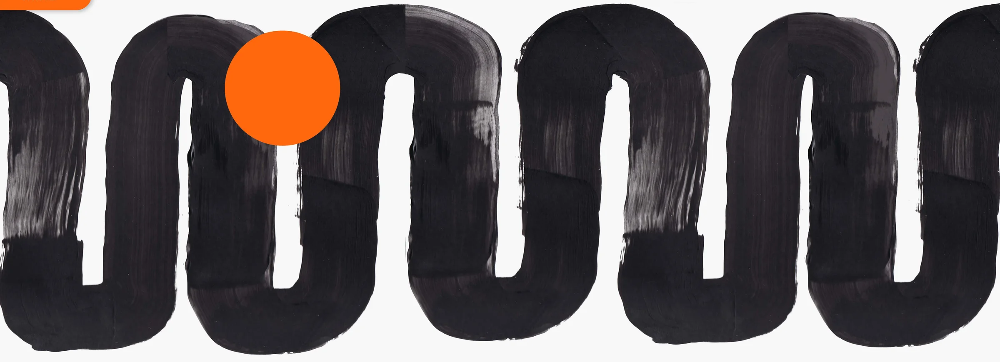

PROFILE
池田 准登JUNTO IKEDA
多摩美術大学 情報デザイン学科 情報デザインコース 4年
大学ではゲーム、アプリ、参加型展示など幅広い制作に取り組み、企画からデザイン、検証・改善まで一貫して行っています。媒体が変わっても一貫して「受け手にどう届くか」を軸に、人と情報、人と体験をつなぐデザインを目指しています。
AWARD
- 高校2年次第68回 静岡県高等学校美術・工芸展 第51回西部展奨励賞
- 高校3年次第69回 静岡県高等学校美術・工芸展 第52回西部展特選
- 大学3年次東京国際プロジェクションマッピングアワード vol.10入賞
- 大学3年次ゲームクリエイター甲子園2025 総合大賞ノミネート入賞
PROGRESS
- 小学生

友達や家族のために絵を描き、「喜んでもらえること」の楽しさを知りました。
- 中学生

ラグビー部主将として、仲間と協力しながら目標に向かう経験を積みました。
- 高校生
美術系高校でデザインを学び、想いを形にして伝える面白さを知りました。
- 大学生

幅広い制作を通して、人と情報をつなぐ「情報デザイン」を学んでいます。
SOFTWARE
- Photoshop
- Illustrator
- After Effects
- Premiere Pro
- TouchDesigner
- Figma
- HTML & CSS

考え、考え、
前へ進む。
デザインに対する考え方
人に届くことを考え抜く
私は、デザインは見た目を整えることではなく、目的や想いを相手に届けるための手段だと考えています。ゲームやアプリ、展示など媒体が変わっても、「誰に、何を、どう届けるか」を軸に、ユーザーの視点に立って考え続けることを大切にしています。
私の強み
課題を整理し、最適な形へ導く力
複雑な課題や曖昧なアイデアを整理し、本質を捉えた上で、ユーザーやチームにとって分かりやすい形へ落とし込むことが得意です。情報設計やUI、グラフィックを通して、課題解決につながるデザインを目指しています。